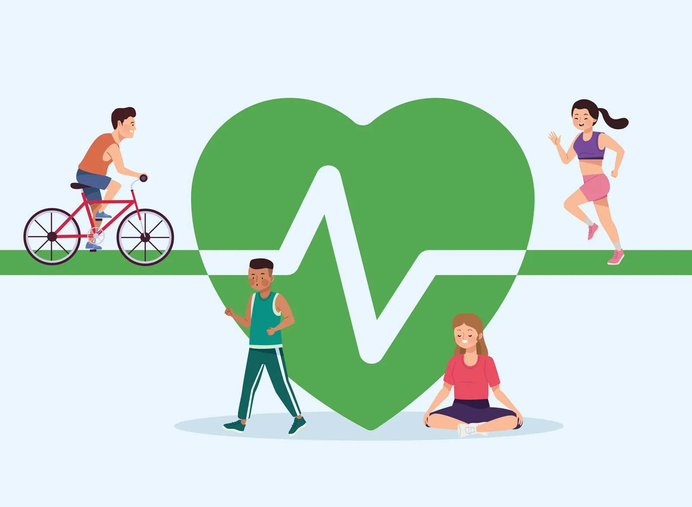

Pourquoi l'activité physique est cruciale pour la santé cardiaque
En France, les maladies cardiovasculaires sont la deuxième cause de mortalité, après les cancers (Santé publique France, page mise à jour le 7 juillet 2025). L'activité physique est un pilier de leur prévention, et elle a toute sa place dans la vie des personnes qui vivent avec une maladie cardiaque, avec l'accord de leur cardiologue.
L'APA se distingue de l'exercice physique traditionnel par sa dimension personnalisée. Elle est conçue pour s'adapter aux capacités et aux besoins spécifiques de chaque individu, notamment ceux présentant des facteurs de risque cardiovasculaire ou souffrant déjà d'une pathologie cardiaque.
Ce que l'activité physique apporte au cœur
Les études sur l'activité physique régulière décrivent plusieurs effets favorables pour le cœur et les vaisseaux :
- Pression artérielle : une pratique régulière aide à faire baisser la pression artérielle.
- Profil lipidique : l'activité physique contribue à augmenter le "bon" cholestérol (HDL) et à réduire les triglycérides.
- Glycémie : l'exercice physique améliore la sensibilité à l'insuline et aide à maintenir un taux de glucose sanguin équilibré.
- Inflammation : une activité physique régulière est associée à une inflammation plus faible, favorable au système cardiovasculaire.
- Vaisseaux sanguins : l'exercice régulier favorise la santé des vaisseaux sanguins en stimulant la production d'oxyde nitrique.
Comment intégrer l'APA dans un programme de santé cardiovasculaire
L'Organisation mondiale de la santé recommande aux adultes au moins 2 h 30 d'activité physique d'intensité modérée par semaine, et rappelle que le renforcement musculaire est bénéfique pour toutes et tous (OMS, aide-mémoire « Activité physique », mis à jour le 4 novembre 2026).
Ces repères doivent être adaptés en fonction de l'âge, de l'état de santé général et des éventuelles pathologies existantes. C'est pourquoi l'accompagnement par un professionnel de l'APA est précieux, particulièrement pour les personnes à risque cardiovasculaire ou qui ont terminé un programme de réadaptation cardiaque, avec l'accord de leur cardiologue.
Mon approche d'enseignant en APA
En tant qu'enseignant en activité physique adaptée, mon approche est fondée sur trois principes essentiels :
- Évaluation personnalisée : Je fais le point avec vous sur vos capacités, votre condition physique et les consignes de votre médecin, pour identifier vos besoins.
- Progressivité : Je conçois un programme qui débute à votre niveau actuel et évolue graduellement pour limiter les risques et progresser durablement.
- Suivi rigoureux : Je vous accompagne pas à pas, en ajustant régulièrement votre programme selon vos progrès et vos ressentis.
Cette méthode vous aide à progresser durablement, avec une attention constante à votre sécurité, particulièrement importante dans le cadre de la santé cardiovasculaire. Pour en savoir plus, découvrez mon accompagnement en activité physique adaptée à Montpellier.
Vous souhaitez reprendre une activité physique adaptée à votre cœur ?
Prendre rendez-vous